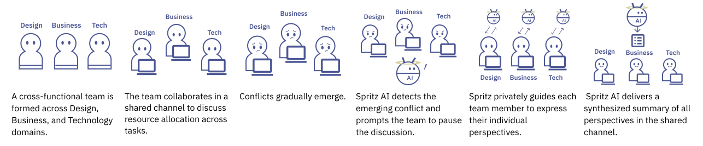
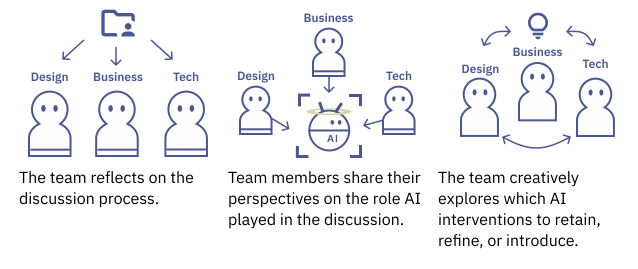

18 ~ 25 歲的大專院校學生，組成跨領域團隊，一同進行專案協作，成員來自不同科系與領域背景。
不同領域的人在各自社群中有不同的價值觀、角色認同與做事習慣，合作於同一目標時，差異劃分了溝通的邊界 (boundary)，導致行動與互動受阻。
Akkerman & Bakker, 2011
AI 作為邊界物件 (boundary object) 的潛力：讓原本未被察覺的差異浮出檯面，進而擴展人們的觀點。
現今 HCI 研究已指出 AI 能在同步溝通（遠距會議、電子白板）中協調邊界跨越；然而 AI 在非同步跨領域協作（群組訊息）中的角色與介入方式仍有待探索。
在非同步溝通情境中，跨領域團隊成員如何感知 AI 作為差異協調者 (mediator) 的角色？
透過簡易的 AI 對話代理人設計，讓參與者親身體會 AI 在溝通流程中的介入，激發對 AI 角色的反思。
在非同步溝通情境中，AI 協調跨領域團隊成員差異的過程，存在哪些設計機會與挑戰？
讓參與者與研究者共同參與詮釋，並將探針引發的反思轉化為未來的設計可能。

在 Discord 群組裡的 AI chatbot，一個非權威性、有點轉不過來但很努力的夥伴
三位不同領域成員（設計／商業／技術）正在進行一場商業競賽，討論下一階段的資源分配，但目前討論有點卡住。
將 10 點分配到以下三個方向：
目標：在 AI 的協助下，透過 Discord 討論達成共識，完成點數分配。
重視系統功能開發，主張優先投入任務 A
重視商業價值與敘事，主張優先投入任務 B
重視使用者研究，主張優先投入任務 C
| 邊界類型 | 實時偵測團隊張力 | 協助個別成員外顯觀點 | 促進團隊成員換位思考 |
|---|---|---|---|
| 語意邊界 Carlile, 2004 |
相同詞彙因專業背景不同有不同解讀 | 私訊個別成員，引導講出對某個有歧義主題的解讀 | 匿名摘要同一主題的不同解讀，引導對齊最終解讀 |
| 語用邊界 Carlile, 2004 |
不同角色之間的利益衝突 | 私訊個別成員，引導講出堅持的原因與不能妥協的底線 | 摘要不同視角對僵持主題的解讀，並試探性提供中間方案 |

基於 AI prototype 的實際介入經驗，探討 AI 協調隱性期待時的角色感知，以及可接受的介入方式。
回顧剛剛的 AI 介入與團隊互動
復盤隱性期待如何出現
討論 AI 在你眼中的角色
提出 AI prototype 的改進方向
透過同儕回饋整理機會與顧慮